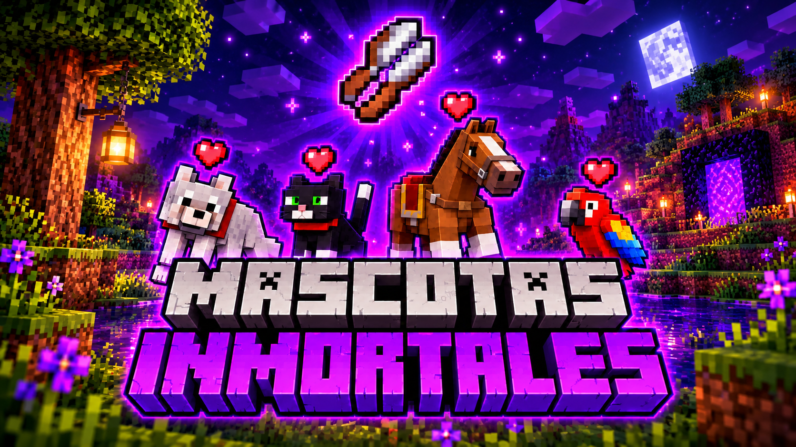

Mascotas Inmortales
Protege a tus mascotas de cualquier peligro en tus aventuras,también puedes quitar la domesticación cuando quieras.

Minimap Teleport
Guarda tus casas,minas o lugares importantes y Teletransportate a ellos ademas cuenta con Radar de mobs cercanos y vision nocturna todo en un solo addon y sin perder tus logros.

TreeFall
TreeFall hace que talar árboles sea más rápido y fácil al estar agachado.